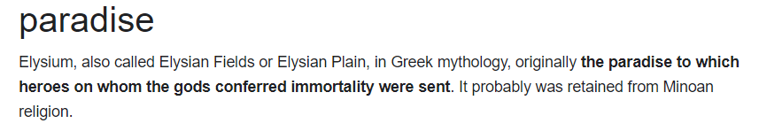
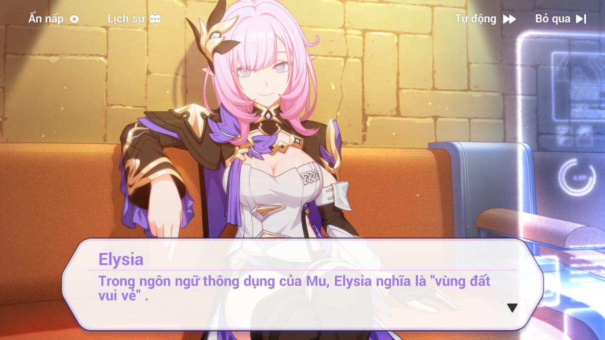
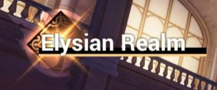

✦ Elysia có xuất phát từ chữ “Elysium” trong ngôn ngữ Hy Lạp cổ, nó mang ý nghĩa liên quan đến “thiên đường”, “vùng đất vui vẻ, hạnh phúc”. “Elysium” cũng còn được gọi là “Cánh đồng Elysian” hoặc “Đồng bằng Elysian”.
✦ Trong thần thoại Hy Lạp, ban đầu nơi này được thiết kế như là thiên đường mà các anh hùng được gửi đến và được các vị thần ban tặng sự bất tử. Theo thời gian, “Elysium” được biến trở thành nơi an nghỉ cuối cùng của anh hùng, những linh hồn may mắn và có đạo đức.
✦ Tên tiếng anh của chế độ “Vùng Đất Xưa Cũ” trong game cũng được đặt dựa theo những ý nghĩa đó, nó là “Elysian Realm”. Vùng đất thiên đường, hạnh phúc, hoàn hảo cho những người anh hùng đã sống cuộc sống chân chính. Cũng đồng thời là nơi an nghỉ cuối cùng của họ.
